Introduction
In today's dynamic economic landscape, accurate forecasting of key indicators such as the unemployment rate plays a crucial role in informing policy decisions, aiding businesses in strategic planning, and empowering individuals to navigate the job market effectively. Time series forecasting, a fundamental technique in predictive analytics, offers valuable insights into the future trends of such indicators. This project delves into the realm of time series forecasting for the unemployment rate, employing a multi-model approach to assess the performance and capabilities of various forecasting methodologies.
Data Preprocessing
-
Stationarity Check
Stationarity check in time series refers to the process of assessing whether a time series data possesses stationarity, a key assumption in many time series analysis techniques. Stationarity implies that the statistical properties of a time series, such as its mean, variance, and autocovariance, remain constant over time.
-
Augmented Dickey Fuller Test
The Augmented Dickey-Fuller (ADF) test is a statistical test commonly used in time series analysis to determine whether a given time series is stationary or not
Null Hypothesis: The null hypothesis of the ADF test is that the time series has a unit root, indicating that it is non-stationary. In other words, if the null hypothesis cannot be rejected, it suggests that the time series is non-stationary and exhibits a unit root, implying a linear trend or dependence on past values.
Alternate Hypothesis: The alternative hypothesis of the ADF test is that the time series is stationary, meaning it does not have a unit root. Rejecting the null hypothesis in favor of the alternative hypothesis indicates that the time series is likely stationary.
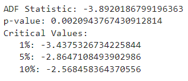 The time series is likely stationary (reject the null hypothesis of non-stationarity).
-
Kwiatkowski-Phillips-Schmidt-Shin (KPSS) Test
The Kwiatkowski-Phillips-Schmidt-Shin (KPSS) test is another statistical test used in time series analysis to assess the stationarity of a time series data. Unlike the Augmented Dickey-Fuller (ADF) test, which tests for the presence of a unit root (indicating non-stationarity), the KPSS test evaluates the null hypothesis of stationarity against the alternative hypothesis of non-stationarity around a deterministic trend.
Null Hypothesis: The null hypothesis of the KPSS test is that the time series is stationary around a deterministic trend. In other words, the null hypothesis assumes that the time series is stationary, except for possible trend components.
Alternate Hypothesis: The alternative hypothesis of the KPSS test is that the time series has a unit root or is non-stationary around a deterministic trend. Rejecting the null hypothesis in favor of the alternative hypothesis suggests non-stationarity.
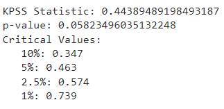 The time series is likely stationary (fail to reject the null hypothesis of stationarity based on KPSS test).
-
-
Seasonal Decompostion
Seasonal decomposition is a technique used in time series analysis to separate a time series into its underlying components, including trend, seasonality, and noise. This decomposition process helps in understanding the various patterns and trends present in the data, making it easier to model and forecast the series accurately.
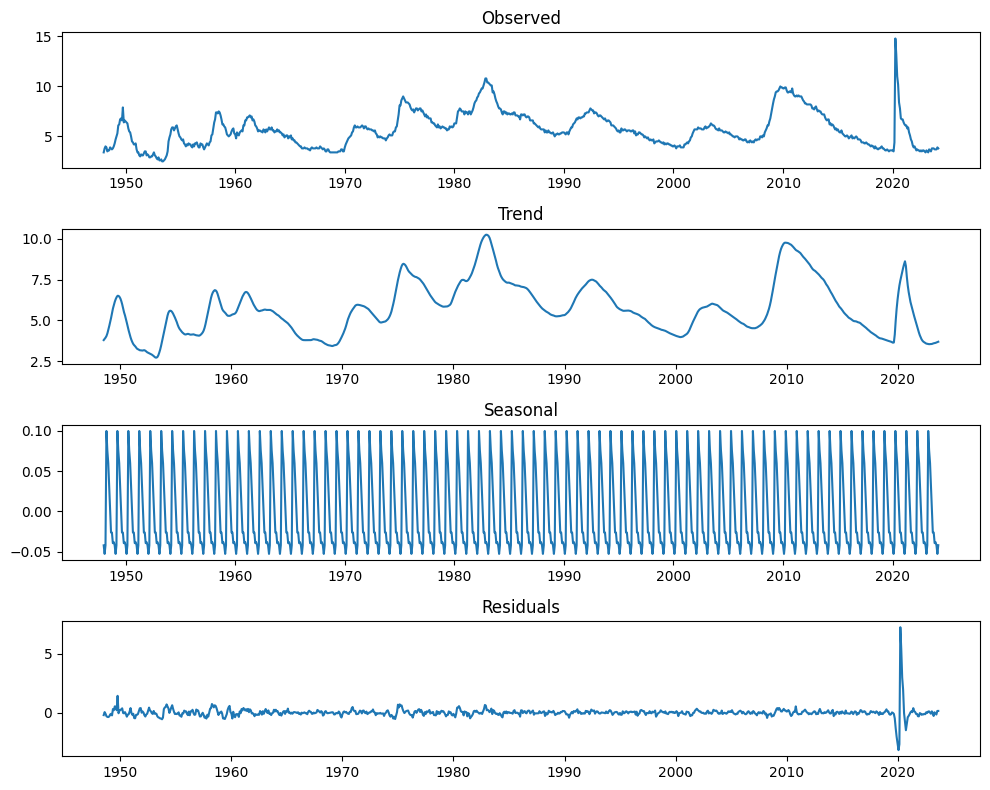
Models
-
Statistical Models
-
AutoRegressive(AR) Model
An Autoregressive (AR) model is a type of time series model used in statistics and econometrics to understand and predict future values based on past observations. Here's a brief overview of AR models:
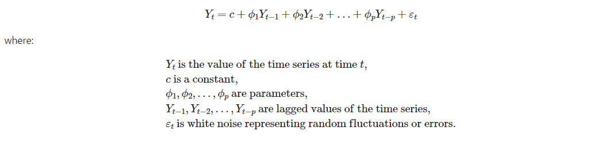 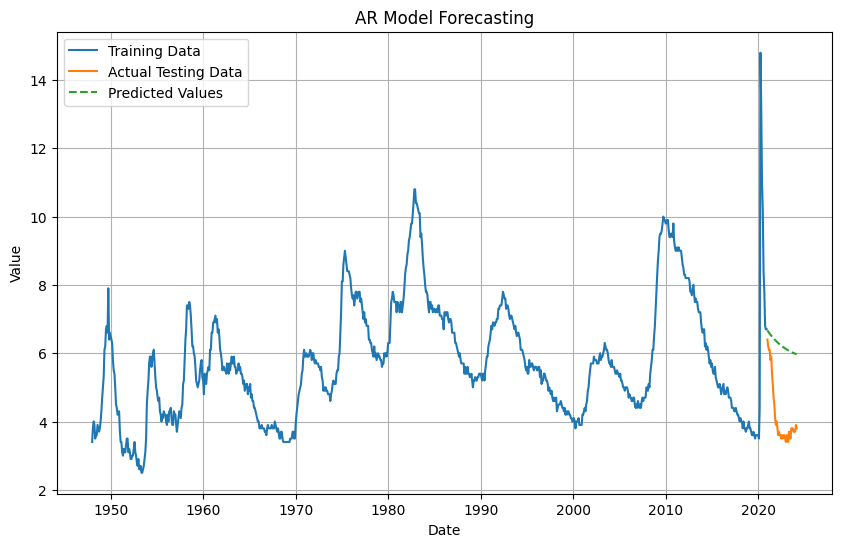 -
Moving Average (MA) Model
A Moving Average (MA) model is a type of time series model used to understand and predict future values based on the average of past forecast errors. Unlike Autoregressive (AR) models that depend on past values of the series, MA models depend on past forecast errors.
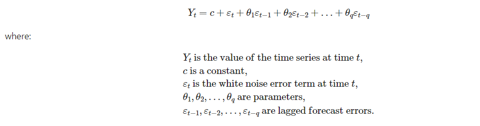 -
ARIMA Model
ARIMA stands for Autoregressive Integrated Moving Average. It's a popular time series analysis and forecasting method that combines Autoregressive (AR) and Moving Average (MA) components with differencing to handle non-stationary data.
The AR part models the relationship between the current observation and its lagged (past) observations. It depends on the lag order p, which indicates how many past observations are considered. The I part involves differencing the series to make it stationary. It is denoted by the differencing order d. The MA part models the dependency between the current observation and a linear combination of past forecast errors. It depends on the lag order q, indicating how many past forecast errors are considered.
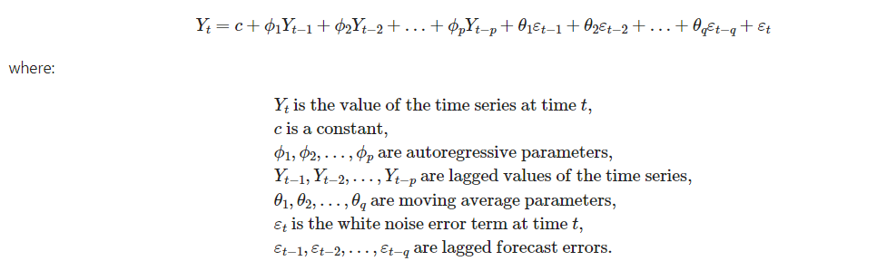 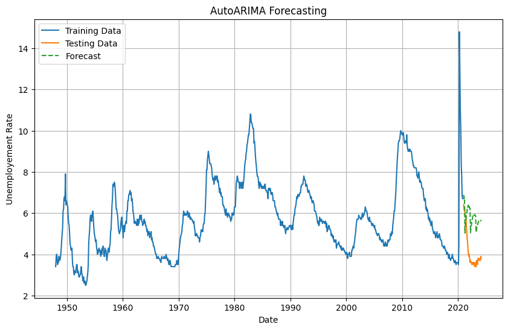
-
-
Prophet Model
Facebook Prophet is an open-source forecasting tool developed by Facebook's Core Data Science team. It is designed to make time series forecasting accessible to non-experts by providing a simple and intuitive interface while also incorporating advanced forecasting techniques.
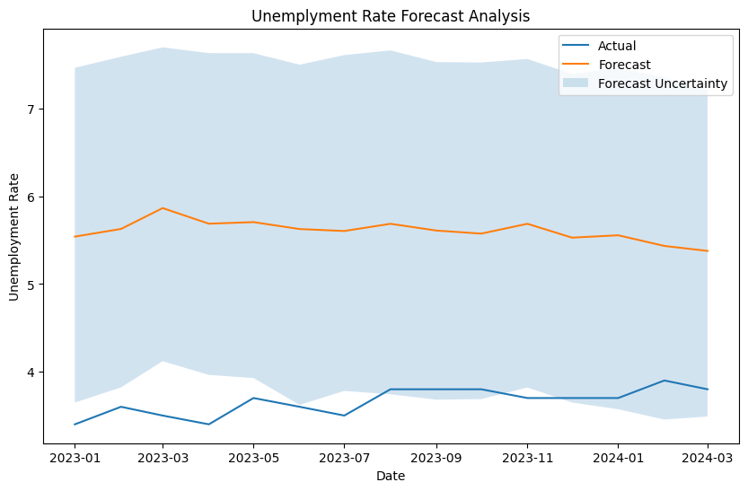 -
Deep Learning Model (LSTM)
Long Short-Term Memory (LSTM) is a type of recurrent neural network (RNN) architecture that is widely used for processing and predicting sequential data, including time series data. LSTM networks are particularly effective for time series forecasting tasks due to their ability to capture long-term dependencies and temporal patterns in the data.
Time series data is inherently sequential, with observations ordered chronologically. LSTM networks are designed to process sequential data, where each data point (e.g., a time step in the series) is fed into the network one at a time.
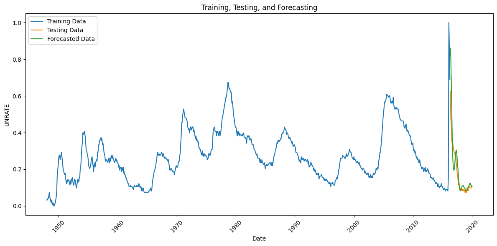 -
Transformer Model (TimeGPT)
TimeGPT, developed by Nixtla, is a generative pre-trained transformer model specialized in prediction tasks. TimeGPT was trained on the largest collection of data in history – over 100 billion rows of financial, weather, energy, and web data – and democratizes the power of time-series analysis. This tool is capable of discerning patterns and predicting future data points in a matter of seconds.
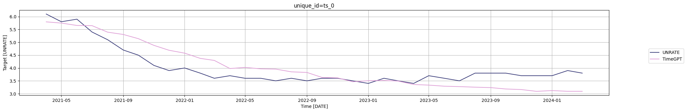
Results
After training the model for the specified number of epochs, the following results were obtained:
| Model | RMSE |
|---|---|
| AR | 2.2040 |
| MA | 1.8431 |
| ARIMA | 1.8480 |
| Prophet | 1.9609 |
| LSTM | 1.0424 |
| TimeGPT | 0.4617 |
Conclusion
Based on the Root Mean Square Error (RMSE) values you provided, it seems that the TimeGPT model outperforms other models in forecasting unemployment rates. With an RMSE of 0.4617, TimeGPT has the lowest error compared to other models like AR, MA, ARIMA, Prophet, and LSTM. Therefore, it can be concluded that the transformer-based TimeGPT model is the most efficient for forecasting unemployment rates based on the given data.